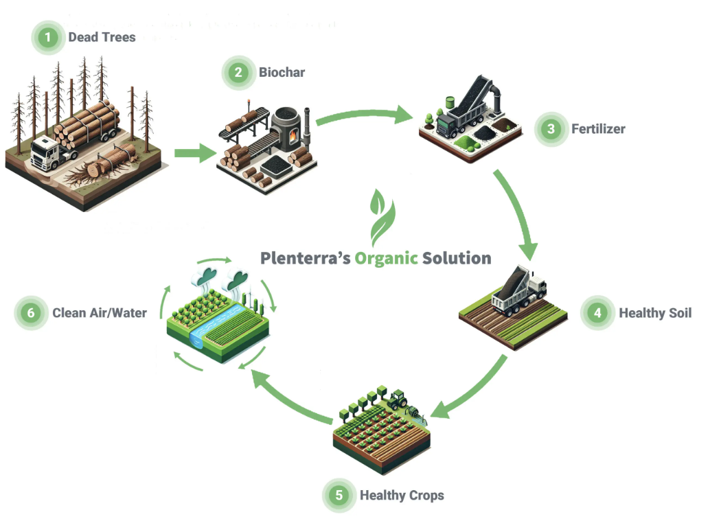
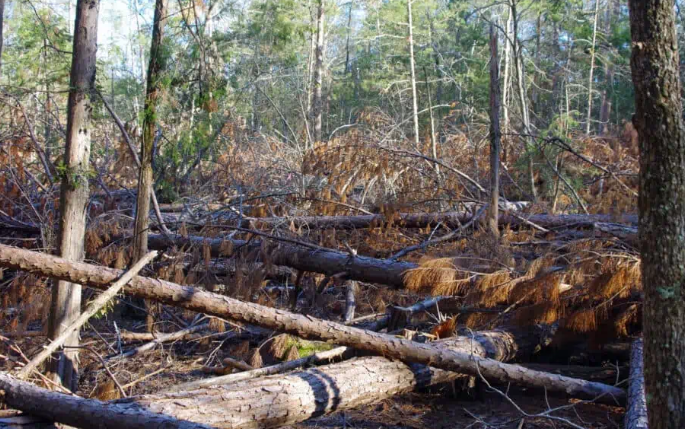
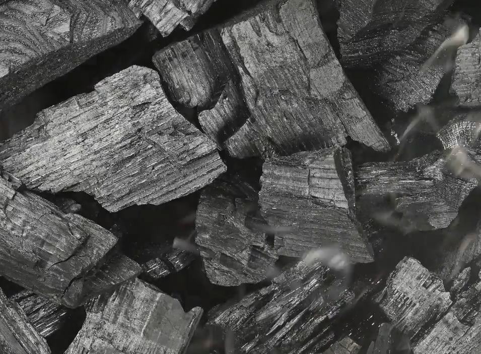
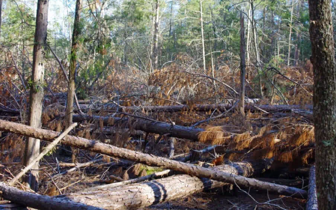
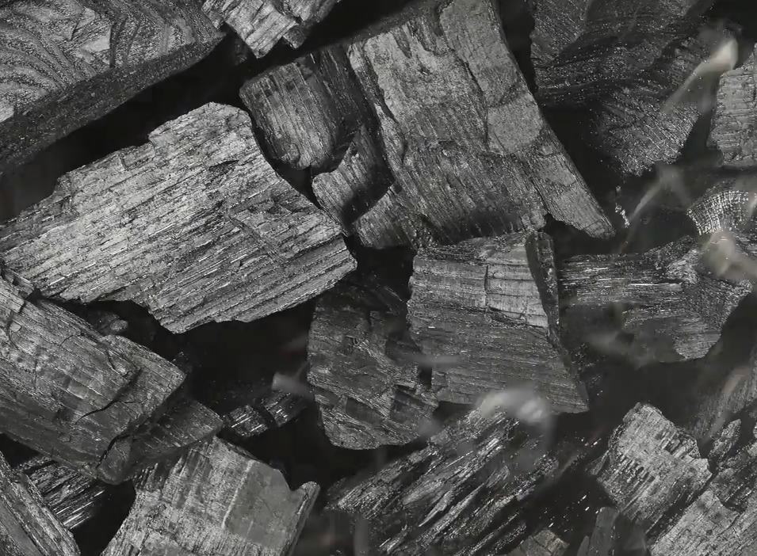
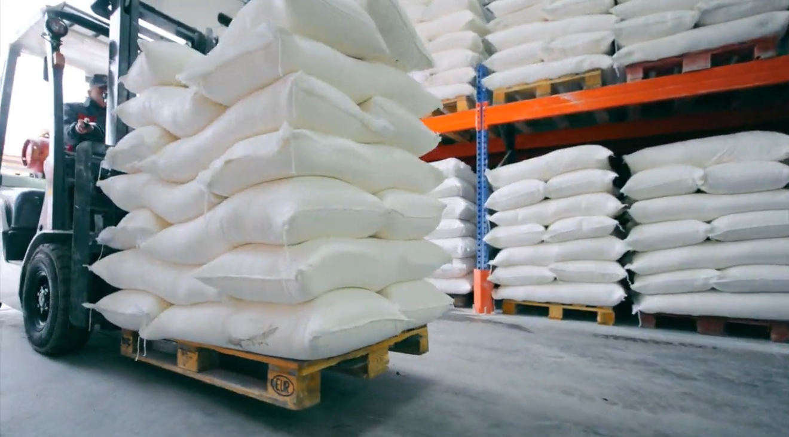
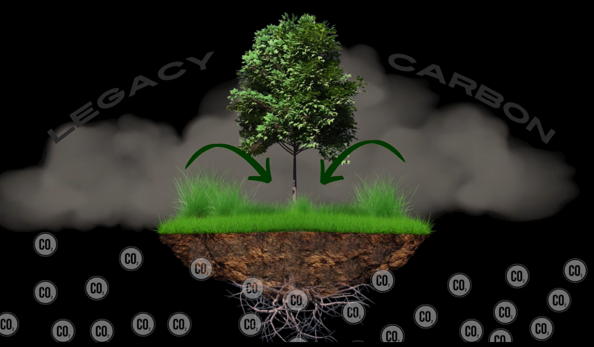

Our Mission at PLENTERRA
At Plenterra, we believe soil fertility is the foundation of farmer success and community well-being. By equipping farmers with biochar, organic fertilizers, and regenerative practices, we turn environmental challenges into economic opportunities. Beyond the farm, these innovations fuel rural economies, create jobs, and build resilience against wildfires and drought. Healthier soils conserve water, clean the air, and support long-term food security. Plenterra is leading the charge in sustainable agriculture—restoring soil, empowering farmers, and driving lasting prosperity.
How We Do It
Understanding and optimizing the carbon cycle is how we can make agriculture a critical tool for healing the planet. Healthy soil creates healthy crops, and ultimately healthy people. It filters the water we drink, and supports stronger and more nutrient dense plant life that filters our air and permanently sequesters carbon back into the soil. Once carbon is back in the soil it changes from a threat to a benefit. Our cutting edge processes help build and heal the soil in years instead of centuries if it was left up to nature to do it alone.
Dead Trees:
Harmful Beetles:
Since 1997, a host of native beetle species has chewed through more than 40 million acres of Western forests, according to aerial surveys by the U.S. Forest Service. 2 million acres in Utah alone.
Deadfall:
The vast expanses of deadfall, a result of necessary forest management and natural cycles, yet a contributing factor to the wildfire crisis that ravage our landscapes and resources.
Creation of Biochar:
Through the innovative utilization of deadfall for the creation of biochar, PLENTERRA is not merely mitigating the risks of extreme wildfires but is actively producing a climate-positive resource that stands as a beacon of hope. This process is helping revitalizing our soils, and most importantly, preventing the release of greenhouse gases and sequestering carbon in a way that helps nature heal itself.
 



Boichar:
Here's a breakdown of the benefits biochar provides to soil:
- Improved Water Retention: Biochar's porous structure acts like a sponge, helping to hold onto water and release it slowly to plants. This is especially beneficial in drought-prone areas.
- Enhanced Nutrient Retention: Biochar can attract and hold onto essential plant nutrients like nitrogen, phosphorus, and potassium, preventing them from leaching away.
- Increased Soil Fertility: Biochar provides a habitat for beneficial soil microorganisms, such as fungi and bacteria. These microbes play a crucial role in breaking down organic matter and making nutrients available to plants.
- Improved Soil Structure: Biochar can help to loosen compacted soils, improving aeration and drainage. This allows for better root growth and overall plant health.
- Carbon Sequestration: By converting biomass into a stable form of carbon, biochar helps to remove carbon dioxide from the atmosphere, mitigating climate change.
Fertilizer:
PLENTERRA supercharges biochar by infusing it with an organic liquid fertilizer. Combined with our organic liquid fertilizers, it accelerates soil regeneration, achieving in just a few years what would naturally take centuries. Our process starts with doing detailed testing on each individual area of land, then based on the results we custom blend a biochar and organic fertilizer blend designed to treat the specific
Healthy Soil:
Providing soil with the necessary nutrition sets off a chain reaction of positive benefits.
- Increased Organic Matter: The addition of nutrients stimulates the activity of beneficial soil organisms like bacteria and fungi. These organisms break down organic matter, creating nutrient-rich humus.
- Improved Water Retention: Healthy soil with good organic matter content holds onto water more effectively, reducing water runoff and drought stress for plants.
- Better Drainage: Improved soil structure allows for better water infiltration and drainage, preventing waterlogging and promoting healthy root growth.
- Reduced Environmental Impact:
- Reduced Fertilizer Use: When soil is naturally fertile, the need for synthetic fertilizers decreases, minimizing pollution of waterways.
- Increased Carbon Sequestration: Healthy soils with high organic matter content act as carbon sinks, helping to mitigate climate change.
Healthy Crops:
When soil receives the right nutrition, a cascade of positive effects occurs:
- Improved Crop Yields: Healthy soil provides plants with the nutrients they need to thrive.
- Enhanced Resistance: Crops grown in healthy soil are more resistant to pests and diseases.
- Better Quality: Nutrient-rich soil leads to more nutritious and flavorful crops.
Clean Water/Air:
Healthy soil with high levels of organic carbon matter has several positive impacts on water filtration and conservation:
- Improved Water Infiltration: Organic matter acts like a sponge, increasing the soil's ability to absorb and hold water. This reduces surface runoff, minimizes soil erosion, and allows water to slowly percolate into the ground, replenishing groundwater supplies.
- Enhanced Water Filtration: As water moves through the soil, organic matter acts as a natural filter. It helps trap pollutants like pesticides, fertilizers, and heavy metals, preventing them from contaminating groundwater and surface water bodies. Beneficial soil microorganisms also break down some pollutants.
- Reduced Water Loss: Healthy soil with high organic matter content has better water-holding capacity. This reduces the need for excessive irrigation, conserving water resources, especially in arid and semi-arid regions.
- Improved Water Quality: By filtering pollutants, healthy soil helps maintain cleaner water sources for drinking, agriculture, and ecosystems.
- Reduced Flood Risk: Increased water infiltration due to high organic matter content helps reduce the risk of flooding by allowing more water to soak into the ground instead of accumulating on the surface.
Carbon Returned:
Coupling soil remediation with regenerative practices such as no till, cover cropping and rotational grazing work together to increase farming yields and pull carbon out of the atmosphere. Robust soil allows plants to extend root systems deep into the ground, storing the sequestered carbon in the soil, and additional revenue sources are opened to farmers and ranchers through carbon markets. According to the website theclimateTrust.org, “The top meter of grassland soils store around 49 tonnes of carbon dioxide equivalents per acre”. Soil Carbon Capture is one of the few initiatives that will efficiently drawdown the legacy carbon load, bridging the gap between continued fossil fuel usage and climate change. Employing innovative approaches allow us to turn healing the planet into fiscally beneficial solutions for farmers and ranchers.
Our Farmers and Communities
Our journey at PLENTERRA is driven by the belief that the fertility of our soils is directly linked to the prosperity of our farmers and the health of our communities. We are helping farmers weaponize their fields against climate change and turn challenges into fiscally responsible solutions. The benefits extend far beyond the farm. Rural economies thrive as biochar production, organic fertilizers and regenerative farming create new jobs. Communities become more resilient, mitigating the risks of wildfires and droughts while building healthy nutrient rich soils, all while helping to conserve water, clean our air, and sequester carbon. We help farmers and growers transition to practices that restore soil, improve food security, and mitigate climate change - all while ensuring economic growth. At PLENTERRA, we’re transforming environmental challenges into sustainable opportunities.